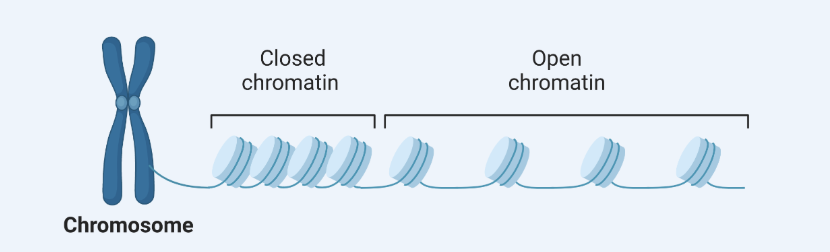
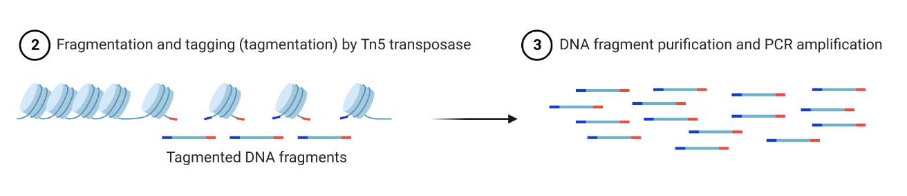
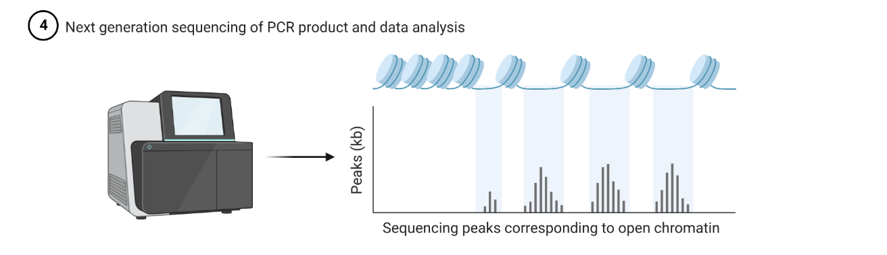
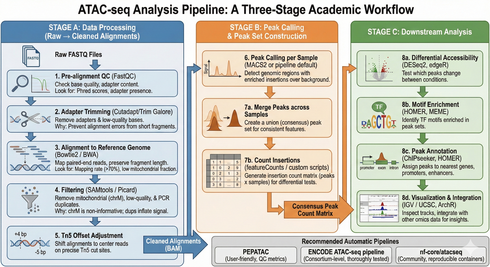

What is ATAC-seq?
ATAC-seq, which stands for Assay for Transposase-Accessible Chromatin using sequencing, is a technique that maps open, accessible regions of the genome by exploiting the behavior of a hyperactive enzyme called Tn5 transposase. Tn5 is loaded with sequencing adapters and preferentially inserts them into regions of chromatin that are not tightly packed by nucleosomes or other proteins — in other words, regions that are open and actively involved in gene regulation, such as promoters and enhancers. After insertion, the tagged DNA fragments are amplified and sequenced, and the regions that accumulate the most insertions are interpreted as the most accessible. The method was introduced by Jason Buenrostro and colleagues in 2013 and has since become one of the most widely used techniques in epigenetics research [1].

To understand why this matters, consider what chromatin structure actually represents. Your genome contains roughly 3 billion base pairs of DNA, but not all of it is equally accessible at any given moment in any given cell type. DNA wraps around protein spools called nucleosomes, and tightly packed nucleosomes physically block the transcription machinery from reaching the DNA underneath. Open chromatin — regions where nucleosomes have been displaced or repositioned — represents the parts of the genome that are actively being used: genes being transcribed, enhancers actively signaling, promoters awaiting activation. Mapping these open regions therefore gives you a direct window into the regulatory state of the cell.

Beyond simply identifying open regions, the fragments themselves carry structural information about chromatin. Short fragments tend to originate from nucleosome-free regions, while longer fragments appearing at roughly 150 base pair intervals reflect nucleosome spacing — meaning the data can reveal not just where chromatin is accessible, but how it is organized. One additional technical detail worth knowing is the Tn5 offset: because the enzyme inserts adapters at slightly offset positions relative to the actual cut site, many analyses apply a small positional correction to ensure reads are accurately aligned to the true insertion events.

Historical note: Jason Buenrostro et al. introduced ATAC-seq in 2013, and the method is now widely used in epigenetics research. One of its major advantages over earlier chromatin accessibility assays like FAIRE-seq and DNase-seq is the small cell input requirement — the original protocol required as few as 500 cells, making it accessible for rare cell populations and clinical samples.
Single-end vs Paired-end Sequencing
When it comes to sequencing strategy, paired-end sequencing is strongly preferred over single-end for ATAC-seq. Since each ATAC fragment has two ends corresponding to two separate Tn5 insertion sites, paired-end reads allow you to reconstruct the full length of every fragment and pinpoint exactly where Tn5 inserted on both sides. This information is essential for fragment-length analysis, nucleosome positioning, and accurately locating insertion sites. Single-end sequencing discards half of this information and noticeably reduces the sensitivity of downstream analyses.
Think of it this way: if you cut a piece of ribbon with scissors and only record where one blade touched the ribbon, you know one end of the cut but not the other. You cannot tell how long the resulting fragment is. Paired-end sequencing records both cut sites, giving you the complete picture of every Tn5 insertion event.
For most standard experiments, sequencing to a depth of around 10 million read pairs per sample is sufficient for routine differential accessibility and motif analyses, though deeper sequencing may be warranted for more specialized applications such as footprinting, where you need enough coverage to detect the subtle dip in signal caused by individual transcription factor occupancy.
Note on this handbook: The public ENCODE dataset we will use throughout this handbook is single-end for practical reasons — it keeps file sizes manageable for learning. In your own research, you should always use paired-end sequencing. The pipeline steps are identical; the only difference is that paired-end alignment uses two input files instead of one and unlocks fragment-length analysis as an additional quality metric.
The Three-Stage Pipeline: A Road Map for This Handbook
Before diving into any terminal commands, it is worth stepping back and seeing the entire landscape. Every ATAC-seq analysis, regardless of the specific tools used, follows the same logical structure: raw data arrives from a sequencer, gets cleaned and mapped to a reference genome, then gets interrogated for biological meaning. This handbook is organized around that structure.

The pipeline divides into three major stages, each covered by a dedicated set of chapters. Understanding what each stage accomplishes — and why it exists — will help you make sense of every command you run in the chapters ahead.
Stage A — Data Processing: From Raw Reads to Clean Alignments
Covered in Chapters 2 through 7
This is the foundational stage. You start with a FASTQ file — a text file containing millions of raw DNA sequences directly off the sequencer — and end with a filtered, high-quality alignment file containing only the reads that truly belong to open chromatin in the genome you care about.
Every step in this stage exists to remove a specific type of noise. The sequencer introduces technical artifacts. The library preparation introduces adapter contamination. The cell itself contributes an enormous amount of mitochondrial DNA that has nothing to do with chromatin accessibility. PCR amplification creates duplicate copies of the same molecule that would inflate your signal. By the time you finish Stage A, you have discarded everything that could mislead your downstream analysis, keeping only the reads that represent genuine, unique Tn5 insertion events in the nuclear genome.
This stage is the computational equivalent of sample preparation in a wet lab. Just as you would purify your protein before running it on a gel — removing salts, detergents, and contaminants that would interfere with your results — Stage A purifies your sequencing data before the real analysis begins. The chapters that cover this stage walk you through each cleaning step individually, explaining not just how to run each tool but why each type of contamination matters and what happens if you skip a step.
What you will have at the end of Stage A: A BED file containing the genomic coordinates of thousands of high-confidence, deduplicated, quality-filtered Tn5 insertion events.
Stage B — Peak Calling: Finding the Mountains
Covered in Chapters 8 through 10
With a clean alignment in hand, Stage B answers the core biological question: where exactly is the chromatin open? Individual reads scattered across the genome do not immediately tell you this — you need to identify regions where reads pile up significantly above background noise. These pile-ups are called peaks, and each one represents a genomic region where Tn5 was able to insert frequently, implying that chromatin there was consistently accessible across the cells you sequenced.
The statistical challenge of peak calling is distinguishing real signal from random fluctuation. Even in a completely empty genome, random read placement would occasionally produce apparent pile-ups simply by chance. Peak calling tools like MACS2 solve this problem by modeling the expected background distribution and flagging only regions that exceed it with statistical confidence. The output is a list of genomic coordinates — one line per peak — that represents your first genuinely biological result: a map of open chromatin in your cell type.
This stage also covers visualization, because no computational result should be trusted until you have seen it with your own eyes. You will learn how to convert your data into a format that can be displayed in a genome browser and how to verify that your peaks appear exactly where the biology predicts they should.
What you will have at the end of Stage B: A narrowPeak file containing the precise coordinates, widths, and statistical scores of every open chromatin region detected in your sample, alongside a BigWig file for visual inspection.
Stage C — Downstream Analysis: Extracting Biological Meaning
Covered in Chapters 11 through 13
Having a list of open chromatin regions is the beginning of biology, not the end. Stage C is where you ask what those regions mean. Are they at gene promoters or enhancers? Which genes do they regulate? Which transcription factors are binding inside them and keeping them open?
This stage is the most biologically rich part of the pipeline and the part that generates the hypotheses that drive experimental follow-up. The chapters in this section teach you to interrogate your peaks directly from the terminal, submit them to web-based annotation and motif enrichment tools, and interpret the results in the context of your specific cell type and biological question.
What you will have at the end of Stage C: A biological narrative — a set of annotated genomic regions, enriched pathways, and candidate transcription factors that describe the regulatory state of your sample.
Tools Used in This Handbook
Every tool in this pipeline was chosen for a combination of scientific validity, practical accessibility on Apple Silicon hardware, and pedagogical clarity. Here is a brief introduction to each one, organized by pipeline stage, so you know what is coming before you encounter it.
- seqtk — A lightweight utility for manipulating FASTQ files. We use it in Chapter 4 to create a reproducible subset of one million reads from the full dataset, giving you a small, fast file to practice on without waiting for full-scale processing times.
- FastQC — The standard quality control tool for sequencing data. It scans a FASTQ file and generates a visual HTML report covering a dozen quality metrics. We run it in Chapter 4 before trimming and again in Chapter 6 after trimming to confirm that adapter removal was successful.
- fastp — A modern, C++-based adapter trimmer and quality filter that runs natively on Apple Silicon. We chose fastp over the more commonly cited Trim Galore because Trim Galore has dependency conflicts on osx-arm64 architecture. fastp performs the same task faster and with better hardware compatibility on modern Macs.
- Chromap — A high-speed aligner specifically optimized for chromatin accessibility data. Unlike the classical Bowtie2 workflow which requires separate steps for alignment, sorting, and duplicate removal, Chromap performs all three operations in a single command. We chose it for this handbook because it reduces the computational overhead of Stage A substantially while producing equivalent results.
- MACS2 — Model-based Analysis of ChIP-Seq, the gold standard peak caller that has been adopted wholesale by the ATAC-seq community. Despite its name referring to ChIP-seq, its statistical framework is well-suited to ATAC-seq with specific parameter adjustments that we cover in detail in Chapter 8.
- bedtools — The Swiss Army knife of genomic interval manipulation. We use it in Chapter 9 to calculate read coverage for visualization and in Chapter 13 to extract DNA sequences from peak regions for motif analysis. Virtually every bioinformatics pipeline uses bedtools at some stage.
- GREAT — A web-based peak annotation tool from Stanford University that connects genomic regions to nearby genes and tests for pathway enrichment. We use it in Chapter 12 to answer the question of which biological processes are associated with our open chromatin regions.
- MEME Suite AME — A web-based motif enrichment server that tests whether known transcription factor binding motifs are statistically overrepresented in a set of sequences. We use it in Chapter 13 to identify candidate transcription factors driving chromatin accessibility in our monocyte sample.
A Note on the Dataset
Throughout this handbook, we work with a publicly available ATAC-seq dataset from the ENCODE project [3] — specifically, a sample generated from mouse monocytes. Mouse data was chosen to avoid the ethical and privacy considerations that come with human genomic data in a tutorial context. Monocytes were chosen because they are an excellent biological example: as innate immune cells with highly dynamic chromatin, they produce strong, interpretable ATAC-seq signal and their regulatory landscape is well characterized in the literature, making it easy to validate that your results make biological sense.
For practical reasons, we align only to Chromosome 19 of the mouse mm10 genome rather than the full genome. A full mouse genome alignment requires 32 GB or more of RAM and takes several hours on a laptop — neither of which is appropriate for a learning environment. Chromosome 19 is gene-rich, well-annotated, and contains enough open chromatin signal to demonstrate every concept in the pipeline meaningfully. The trade-off is that your peak counts and pathway enrichment results will be smaller than in a real experiment. Every chapter that is affected by this limitation notes it explicitly and explains what the full-genome results would look like.
References
- Buenrostro, J.D., Giresi, P.G., Zaba, L.C., Chang, H.Y. and Greenleaf, W.J. (2013). Transposition of native chromatin for fast and sensitive epigenomic profiling of open chromatin, DNA-binding proteins and nucleosome position. Nature Methods, 10(12), 1213–1218.
- Yan, F., Powell, D.R., Curtis, D.J. and Wong, N.C. (2020). From reads to insight: a hitchhiker's guide to ATAC-seq data analysis. Genome Biology, 21, 22.
- The ENCODE Project Consortium (2012). An integrated encyclopedia of DNA elements in the human genome. Nature, 489(7414), 57–74.